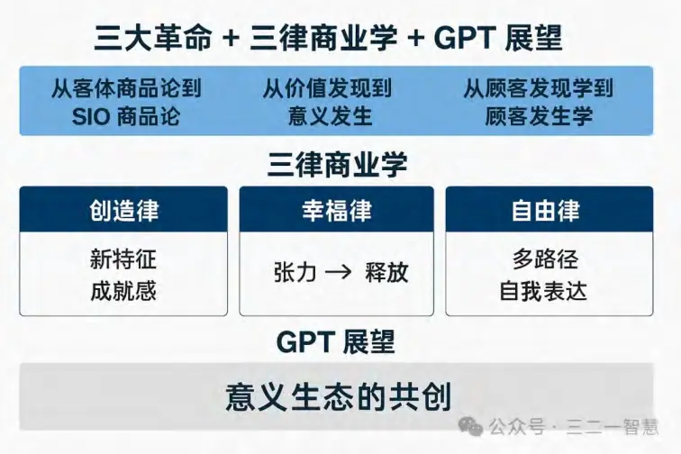

从客体商品到SIO商品，
从价值发现到意义发生，
从顾客发现到顾客发生
摘要
当代商业正面临一个结构性的核心矛盾：商品价值的静态性与顾客需求的动态性。传统的价值商业模式，将商品视为一个具有固定真（品质与功能）、善（关怀与责任）、美（审美与情感）价值属性的客体（O），通过市场调研、细分、定位等方法去寻找匹配的顾客群体，并在交易中一次性交付价值。然而，在全球化、数字化与社交网络驱动的高速变化市场中，顾客的需求与价值偏好正以前所未有的速度变化，这使得商品一旦交付即进入价值衰减周期，企业陷入短周期竞争、价格战和促销疲劳的恶性循环。
为化解这一核心矛盾，本书提出商业实践智慧的三大革命，构建一种基于SIO本体论与意义三律的全新商业运行框架：
第一场革命：从客体商品论到SIO商品论。
在SIO经济学中，商品不再是一个孤立的客体（O），而是一个由主体（S）、互动（I）、客体（O）构成的整体结构。商品的价值不再依赖于静态属性，而是在企业SIO与顾客SIO的现实互动中持续发生意义经历与体验。SIO商品通过意义三律——创造律（生成新特征）、幸福律（张力—释放循环）、自由律（多路径探索）——让真善美价值动态呈现，从而延长生命周期、增强顾客黏性，并构建不可复制的意义护城河。
第二场革命：从价值发现到意义发生。
传统的价值商业逻辑将价值视为固定的真善美集合，通过“发现—匹配”来满足顾客需求。而意义商业逻辑认为，价值是企业与顾客在SIO互动中动态生成的结果，随意义三律的运行而不断变化。创造律驱动新的真，幸福律驱动新的善，自由律驱动新的美。这种意义发生不是一次性交付，而是持续生成，使价值与顾客需求保持同频，并将价值的护城河从技术和资源壁垒转向意义生态壁垒。
第三场革命：从顾客发现学到顾客发生学。
传统市场学假设市场先验存在，企业通过细分与定位去寻找目标顾客。而顾客发生学则认为，市场是在企业与顾客的现实互动中被生成的。顾客不再是被动的价值接受者，而是意义共创、社群共建、价值共生的参与者。企业由市场探索者转变为市场发生者，不再抢现有市场，而是在互动中生成新市场、新场景和新社群。
这三大革命相互依存：SIO商品为意义发生提供结构，意义发生为顾客发生提供动力，顾客发生为SIO商品提供持续的应用场景与反馈。在三律驱动和特征律（混沌—自组织—涌现）的机制下，商业不再是静态竞争，而是动态共生生态；企业不再是产品提供者，而是意义生态的构建者；顾客不再是被动消费者，而是生态参与者。
商业实践智慧的三大革命，不仅是对价值商业的升级，更是一次商业本体论的重构，它将帮助企业在高度不确定的未来中，持续生成创新、保持市场活力，并在顾客的创造、幸福与自由中实现长期的共同成长。
绪论：为什么今天需要商业实践的三大革命
一、时代背景：商业的加速与失序
过去三十年，商业运行的节奏经历了两个重大加速器：
全球化让生产、分销、资本和信息跨越地域边界，形成了一个竞争全面化、信息透明化的市场。
数字化与社交化让信息传播和用户连接的速度成倍提升，顾客的需求和偏好在极短时间内就可能发生改变。
表面看，这些变化似乎为企业提供了前所未有的机遇：可以接触更广泛的顾客群，可以利用数据更精准地定位目标市场，可以通过技术更快推出产品。然而，真实的商业实践却揭示了另一面：
产品生命周期缩短，刚上市的产品很快被模仿甚至超越；
品牌忠诚度下降，顾客的注意力和偏好更加分散和易变；
市场竞争日趋同质化，价格战和促销疲劳成为常态。
这并不是企业战略不努力的问题，而是商业运行的结构性矛盾越来越突出。
二、核心矛盾：静态商品价值 vs 动态顾客需求
在传统商业逻辑中，商品价值是静态的。
一旦商品被设计、生产并投放市场，其核心属性（功能、性能、外观、价格、品牌形象）就基本确定。
企业可以通过广告和销售渠道强化顾客对这些属性的感知，但商品的价值形态本身不会在顾客的使用过程中发生根本变化。
与此同时，顾客需求是动态的。
当代顾客的价值偏好会随着生活阶段、社群互动、社会趋势而频繁变化。
信息的快速流通让顾客接触到多样化的选择，他们对新鲜感、参与感、自我表达的需求不断提升。
这两条曲线——静态的商品价值曲线与动态的顾客需求曲线——在时间轴上不可避免地出现错位：
商品一旦交付，其价值开始进入衰退期，而顾客的需求却在变化、升级、迁移。
企业为了追赶需求变化，不得不不断推出新产品、打价格战、做促销活动，结果陷入短周期高消耗的竞争陷阱。
这个矛盾，不是靠更精准的市场调研或更快的产品迭代就能根本解决的，因为它源自商业运行的本体结构——把商品视为一个固定属性的客体（O），而不是一个可以动态生成意义的整体互动系统。
三、三大革命的提出：化解结构性矛盾的系统方案
为了化解“静态价值 vs 动态需求”的矛盾，我们需要一次商业本体论的革命，也就是彻底改变商业运行的核心假设。这就是本书提出的商业实践智慧的三大革命：
1. 从客体商品论到SIO商品论
旧逻辑：商品是客体（O），承载着固定的真、善、美价值属性，通过优化这些属性来竞争。
新逻辑：商品是一个SIO结构——主体（S）、互动（I）、客体（O）的整体。它的价值不是静态的，而是在现实互动中持续生成意义经历和动态真善美。
关键作用：SIO商品能够在顾客使用的全过程中运行意义三律（创造、幸福、自由），不断生成新特征与新体验，让价值曲线和顾客需求曲线实现同频共振。
2. 从价值发现到意义发生
旧逻辑：通过市场调研“发现”顾客的价值偏好（真善美组合），然后设计匹配的产品。
新逻辑：价值不是固定的，而是随着企业SIO与顾客SIO互动中意义三律的运行而不断发生和变化。
关键作用：意义发生模式将一次性交付转变为持续生成，使价值生态比技术或资源壁垒更难被复制。
3. 从顾客发现学到顾客发生学
旧逻辑：市场先验存在，企业通过细分、定位、竞争策略去“找到”目标顾客。
新逻辑：市场是在现实互动中被生成的，顾客是动态发生的市场共同体成员。
关键作用：企业不再抢现有市场，而是在互动中生成新市场、新场景、新社群，让顾客成为意义生态的共创者和推动者。
四、理论基础：SIO本体论与意义三律
SIO本体论
一切存在都是主体（S）、互动（I）、客体（O）的整体，缺一不可。
商品、顾客、市场本质上都是SIO结构，只是在不同情境下呈现不同形态。
意义三律
1. 创造律：生成新特征、新可能，是价值中“真”的动态来源。
2. 幸福律：张力—忍耐—释放的正向循环，是价值中“善”的体验基础。
3. 自由律：多路径探索与自我表达的空间，是价值中“美”的体现方式。
这两套理论结合，构成了三大革命的底层逻辑：
革命一用SIO结构替代O结构，让商品具备持续生成意义的能力；
革命二用意义三律替代固定价值集合，让价值与顾客需求共同进化；
革命三用SIO互动替代静态顾客细分，让市场与顾客在互动中共同发生。
五、三大革命的相互关系与整体框架
这三场革命并不是孤立的，而是互为条件、互相支撑：
SIO商品革命 提供了意义发生的结构条件；
意义发生革命 提供了顾客发生的动力机制；
顾客发生革命 为SIO商品提供了源源不断的应用场景与反馈循环。
它们共同构成了一个闭环：
1. SIO商品在互动中发生意义；
2. 意义的持续生成推动顾客生态的动态形成；
3. 顾客生态的反馈反过来推动SIO商品的进化。
六、本书结构预览
第一编：从客体商品论到SIO商品论——重构商品定义，让它从静态客体变为意义生成系统。
第二编：从价值发现到意义发生——重构价值逻辑，让价值与顾客需求保持动态同频。
第三编：从顾客发现学到顾客发生学——重构市场逻辑，让顾客与市场在互动中持续生成。
第四编：三大革命的系统整合与商业未来——提出三律驱动与特征律机制下的协同运行模型，并展望未来商业生态的可能性。
第一编：从客体商品论到SIO商品论的革命
第一章客体商品论的传统逻辑与局限
在传统商业理论中，商品被定义为一个可供市场交易的客体（O），它的价值由一组固定的属性所决定，例如：
功能属性：产品能做什么；
性能属性：做得有多好；
外观属性：美感与识别度；
价格属性：性价比与可负担性；
品牌属性：信誉与象征意义。
客体商品论的假设是：
只要这组属性被设计得足够优秀，并且通过营销被顾客充分感知，商品就能在市场上长期竞争。
这一逻辑在工业时代有效，因为：
1. 市场变化缓慢，顾客需求的演变周期较长；
2. 产品的制造门槛高，复制和模仿的成本大；
3. 信息传播慢，品牌一旦建立就能长期维持认知优势。
然而，在当代商业环境中，这一逻辑暴露出越来越多的结构性局限：
生命周期缩短：技术和供应链的普及，使得新产品一经推出，竞争者就能快速复制，导致产品生命周期显著缩短。
价值衰减快：顾客对功能、外观的适应速度越来越快，价值感知的峰值期被压缩。
差异化难以维持：在信息透明、产品高度同质化的环境下，差异化优势迅速消失。
顾客参与缺失：在客体商品论下，顾客是被动的价值接受者，缺乏在价值生成过程中的参与感和影响力。
最终，客体商品论的企业不得不陷入不断推新—被模仿—再推新的高消耗循环，形成价格战与促销疲劳的恶性竞争。
第二章 SIO商品论的理论基础
要突破客体商品论的局限，我们需要改变商品的本体定义。这一转型的基础是SIO本体论：
S（主体）：商品所连接和服务的顾客、企业员工、合作伙伴、社群成员等。
I（互动）：主体之间围绕商品展开的行为、沟通、协作、交易、体验。
O（客体）：商品的物理形态、功能、性能与外观。
SIO本体论的核心观点是：
商品不是孤立的客体，而是S、I、O三要素构成的整体结构。
SIO商品论基于这一观点，将商品定义为：
一个能够在现实互动中持续运行意义三律（创造、幸福、自由），并在真、善、美价值形态上动态呈现的整体系统。
这意味着：
1. 商品的价值不是事先固定好的，而是在使用与互动过程中动态生成的；
2. 商品的意义来自于主体与主体之间、主体与客体之间的互动体验；
3. 商品的竞争力来源于它能否在不同情境下保持意义生成的能力，而不是一次性交付的功能或外观。
第三章 SIO商品的运行机制
SIO商品之所以能超越客体商品，是因为它在互动中能持续运行意义三律，并触发特征律的生成过程。
1. 意义三律在SIO商品中的作用
创造律：
商品应让顾客在互动中创造新特征、新体验或新身份，从而感知“真”的价值。
例：乐高积木让用户创造独一无二的作品；
例：编程平台让用户生成属于自己的应用。
幸福律：
商品应在顾客体验中形成“张力—忍耐—释放”的正向循环，从而感知“善”的价值。
例：健身应用通过挑战目标、持续训练、阶段性成就感维持幸福循环；
例：游戏通过任务难度递进和奖励机制实现情绪的张弛有度。
自由律：
商品应为顾客提供多路径、多情境的探索与自我表达空间，从而感知“美”的价值。
例：个性化时尚品牌让用户定制自己的款式；
例：旅行平台为用户提供多种自由组合的行程方案。
2. 特征律在SIO商品中的作用
特征律链条：混沌 → 自组织 → 涌现
混沌：SIO商品通过多元主体、复杂情境引入不确定性；
自组织：互动在无中心控制的条件下形成稳定模式；
涌现：生成新的特征与意义形态，超越企业和顾客的预设。
第四章从O到SIO的重生案例
案例一：GoPro——从相机到极限运动意义生态
O逻辑：相机=拍摄功能+画质+耐用性。
SIO逻辑：GoPro=极限运动者（S）+记录与分享（I）+相机设备（O） → 持续生成“挑战极限、记录人生”的意义生态。
结果：顾客不仅购买相机，更加入了一个以挑战和分享为核心的社区，价值持续更新。
案例二：乐高——从积木到创意社区
O逻辑：积木=造型+材质+拼装方式。
SIO逻辑：乐高=玩家（S）+创作与交流（I）+积木组件（O） → 持续生成创意与亲子关系的意义。
结果：乐高的价值不在于卖出多少颗积木，而在于持续维系一个创造性生态。
案例三：星巴克——从咖啡到“第三空间”
O逻辑：咖啡=口味+品质+价格。
SIO逻辑：星巴克=消费者（S）+社交与休憩（I）+咖啡与空间（O） → 持续生成“第三空间”的意义体验。
结果：顾客买的不是咖啡，而是社交身份与生活方式。
第五章商业意义与战略启示
1. 延长生命周期：
SIO商品的价值在互动中不断生成，不会因功能被复制而迅速贬值。
2. 增强顾客黏性：
顾客是价值的共同生产者，他们在商品意义生态中的投入增加了退出成本。
3. 构建不可复制的护城河：
功能和外观容易被模仿，但意义生态的结构难以复制。
4. 促进市场自发生长：
SIO商品可以不断生成新场景和新需求，推动市场从内部扩张。
第二编：从价值发现到意义发生的革命
第一章价值发现的传统逻辑与局限
在传统商业逻辑中，“顾客价值”被定义为顾客从商品或服务中获得的利益减去其付出的成本。这种价值往往被分解为真（功能与品质）、善（关怀与责任）、美（审美与情感）三种静态价值形态。
价值发现学的运行流程通常是：
1. 市场调研 → 发现顾客的价值偏好（真善美的组合）；
2. 产品设计 → 将这些价值属性嵌入商品中；
3. 营销传播 → 强化顾客对这些价值的感知；
4. 销售交付 → 顾客获得价值，交易结束。
在工业化和信息传播较慢的年代，这套逻辑可以长时间有效。然而在当代商业环境中，它面临几个不可逆的局限：
价值静态化
商品的真、善、美一旦被设计出来，就在较长周期内保持不变，无法跟上顾客需求的快速变化。
需求动态化
顾客的价值偏好会随情境、社群、趋势而快速转移，导致已交付的价值迅速过时。
价值衰减快
高度同质化的市场使得价值差异很快被竞争对手模仿或超越，企业陷入持续的再定位和促销压力。
顾客参与缺失
在价值发现模式中，顾客是被动的价值接受者，他们的角色仅限于被调研、被定位、被销售。
这导致了一个根本性问题：静态的价值无法与动态的需求保持同频。
第二章意义发生的理论基础
1. SIO本体论
商品、顾客、市场都不是孤立存在的，而是主体（S）—互动（I）—客体（O）的整体结构。价值不是O的固定属性，而是在SIO互动中生成的。
2. 意义三律
创造律：生成新特征、新可能，是价值中“真”的动态来源。
幸福律：张力—忍耐—释放的正向循环，是价值中“善”的体验基础。
自由律：多路径探索与自我表达的空间，是价值中“美”的体现方式。
3. 发生学逻辑
意义发生 = 企业SIO与顾客SIO在现实互动中，运行意义三律，从而在真、善、美价值形态上持续生成新的生命力。
这意味着：
价值不是一次性交付的，而是一个动态生成的过程；
顾客不是价值的被动接受者，而是意义的共同创造者；
真、善、美不再是静态的属性，而是意义三律运行的结果。
第三章意义发生的运行机制
1. 三律协同运行
创造律驱动“真”
在互动中为顾客提供创造新特征或新体验的机会，让他们获得真实的成就感。
例：编程平台让用户开发属于自己的应用，而不是仅仅使用预设功能。
幸福律驱动“善”
通过张力—忍耐—释放的循环，让顾客感到被关怀、被支持，并在达成目标时获得情绪释放。
例：健身应用设定分阶段挑战和奖励机制，让用户在突破自我中感受善意的陪伴。
自由律驱动“美”
提供多路径探索、个性化定制和自我表达的空间，让顾客在使用过程中实现美感和自我认同。
例：个性化设计平台让用户定制产品外观与功能。
2. 特征律机制（混沌—自组织—涌现）
混沌：引入多元主体、多样情境，制造不确定性；
自组织：互动逐渐形成稳定模式；
涌现：新的意义形态自然出现，超越预设方案。
意义发生依赖这种开放、非线性的过程，而不是自上而下的价值植入。
第四章案例解析
案例一：苹果生态系统
旧模式：销售功能强大的设备（真）、美观的外观（美）、优质的售后（善）。
新模式：设备（O）+ 用户（S）+ 应用/服务/社区（I） → 持续发生创造、幸福、自由的体验。
结果：用户通过创作、分享、个性化使用不断生成新的价值，苹果的价值生态持续升级。
案例二：健身应用（如Keep）
旧模式：提供固定课程和健身建议。
新模式：用户设定目标（创造律）、挑战和社群支持（幸福律）、自由选择训练方式（自由律）。
结果：健身过程变成持续意义发生的旅程，用户粘性显著提升。
案例三：开源软件社区
旧模式：销售软件许可证，交付功能价值。
新模式：开发者（S）+ 协作平台（I）+ 代码（O） → 在协作中持续生成新功能和新价值。
结果：价值不是一次性交付，而是在社区中不断发生和演化。
第五章战略启示
1. 价值思维向意义思维转型
企业需要从一次性交付价值，转变为设计能够持续发生意义的互动系统。
2. 动态真善美的生成
真、善、美不应在产品上市时就固定，而应在使用中不断被重新定义和体验。
3. 顾客参与与共创
意义发生依赖顾客的主动参与，企业应创造让顾客能贡献创意、情感和选择的空间。4. 意义生态护城河
功能和资源容易被复制，但意义生态一旦形成，将构成长期不可替代的竞争优势。
第三编：从顾客发现学到顾客发生学的革命
第一章顾客发现学的逻辑与局限
1. 传统顾客发现学的基本假设
在传统商业理论中，“顾客发现学”建立在两个核心假设上：
1. 市场先验存在
市场被认为是一个已经存在的客观空间，包含着不同特征的人群。
2. 顾客可被找到
通过市场调研、人口统计学（Demographics）、心理特征分析（Psychographics）和行为分析（Behavioral）等方法，可以识别出目标顾客群。运行模式：
细分市场（Market Segmentation）：按照年龄、性别、收入、地域、兴趣等维度切割市场。
市场定位（Positioning）：在顾客心智中占据独特位置。
产品匹配（Product-Market Fit）：根据定位设计和优化产品，满足特定细分的需求。
2. 局限性与困境
在高度变化的商业环境中，这种逻辑面临严重问题：
市场不稳定：细分群体的兴趣与价值观变化迅速，切割出来的市场很快失效。
顾客画像失真：在多平台、多场景的现实中，顾客的行为模式无法被单一画像准确捕捉。
匹配滞后：等到企业根据发现结果推出产品时，市场需求可能已经发生迁移。
被动竞争：企业陷入抢占既有市场的消耗战，缺乏生成新市场的能力。
这种发现—匹配模式，本质上是被动适应，无法引领市场的生成。
第二章顾客发生学的理论基础
1. SIO本体论视角
在SIO本体论中：
顾客不是一个固定的群体，而是主体（S）、互动（I）、客体（O）在特定情境下的整体结构。
顾客身份和市场形态是在现实互动中动态生成的，而不是预先存在的。
2. 意义三律的作用
顾客的生成与演化，取决于企业与顾客在互动中运行的意义三律：
创造律：让顾客在互动中生成新身份、新体验、新技能。
幸福律：让顾客在互动中经历张力—释放的情感循环，形成长期情感连接。
自由律：让顾客在互动中拥有多路径探索与自我表达的空间。
3. 顾客发生学定义
顾客发生学 = 企业SIO与潜在用户SIO在现实互动中，通过意义三律的运行，动态生成顾客身份、市场场景和价值生态的过程。
这意味着：
市场不是被找到的，而是在互动中发生的；
顾客不是被定位的，而是在参与中自我生成的；
企业不再是市场探索者，而是市场发生者。
第三章顾客发生学的运行机制
1. 从细分市场到意义三律权重组合
传统细分市场依据人口特征与行为特征；
顾客发生学依据意义三律权重组合（创造/幸福/自由的比例），形成动态的市场群体。
例如：
创造主导型：关注新特征与创新体验；
幸福主导型：关注情感满足与舒适体验；
自由主导型：关注多样选择与个性表达。
2. 从市场定位到价值—意义耦合
传统定位匹配真善美价值；
顾客发生学将价值形态与意义三律运行结果相耦合，让市场定位在互动中自然固化。
3. 从产品匹配到市场生成
传统模式中，产品是为现有市场设计的；
顾客发生学中，产品是与顾客共同生成的，市场在使用和互动中不断被创造出来。
第四章案例解析
案例一：小红书——动态发生的生活方式市场
传统视角：小红书的用户是某个细分的年轻女性消费群体。
发生视角：通过笔记分享、社群互动、种草—拔草循环，小红书持续生成新的消费圈层（露营、美妆、宠物、家居等）。这些市场在平台互动中自发生长，而不是事先切割好的。
案例二：特斯拉——能源与交通生态的顾客共建
传统视角：特斯拉定位为高端电动车品牌，目标是环保意识强的中高端消费者。
发生视角：通过持续的软件更新、自动驾驶体验、超级充电网络、车主社群活动，特斯拉让顾客不断生成新的身份（技术先行者、环保先锋、社群参与者），从而不断拓展市场生态。
案例三：宜家——顾客参与的家居生态
传统视角：宜家锁定价格敏感、喜欢DIY的年轻家庭。
发生视角：通过体验式卖场、样板间灵感、顾客反馈设计、线上社群分享，宜家让顾客在互动中生成新的生活方式认同和家居文化圈。
第五章战略启示
1. 市场从静态到动态
不再试图用一次性调研定义市场，而是建立持续互动的发生机制，让市场在企业与顾客的共同作用中不断生成。
2. 顾客从被动到主动
不再将顾客视为定位和匹配的对象，而是让他们在参与中成为意义生态的共创者。3. 定位从设计到发生
品牌定位不是一开始就确定的，而是在长期互动中自然形成并被顾客自我认同。
4. 竞争从争夺到生成
不再消耗资源去抢占现有市场，而是通过生成新的意义场景和顾客共同体来扩展市场版图。
第四编：三大革命的系统整合与商业未来
第一章三大革命的互依关系
三大革命——从客体商品论到SIO商品论、从价值发现到意义发生、从顾客发现学到顾客发生学——并不是三条平行的路线，而是一个互为条件、相互驱动的整体系统。它们之间的关系可以用一个“意义生成闭环”来描述。
1. SIO商品革命为意义发生提供结构
商品从孤立客体（O）转变为主体—互动—客体（SIO）的整体结构，具备在真实使用场景中运行意义三律的能力。
这种结构是意义发生的物理与社会基础：没有SIO结构，意义发生只能停留在理念层面，无法进入顾客的日常体验。
2. 意义发生革命为顾客发生提供动力
在SIO结构中运行的意义三律，让商品与顾客的互动不断生成新的真、善、美形态。
这种动态价值不仅满足现有顾客，还会吸引与原有价值偏好不同的潜在用户进入互动网络，从而生成新的顾客群体。
3. 顾客发生革命为SIO商品提供反馈与扩展
新生成的顾客群体会带来新的使用情境、反馈与社群文化，这些反过来推动SIO商品的迭代与扩展。
顾客发生不仅是市场增长，更是SIO商品结构不断进化的推动力。
总结：
SIO商品革命是结构基础，意义发生革命是运行机制，顾客发生革命是扩展与反馈。三者共同形成一个自我强化的商业生命系统。
第二章三大革命的协同运行模型
为了让三大革命发挥最大效力，企业需要在战略层面建立一个三律驱动的协同运行模型。
1. 核心要素
SIO结构设计：在商品设计阶段，就将主体、互动、客体视为一个整体系统来构建。三律嵌入：确保在顾客的使用过程中，能够持续启动创造律、幸福律、自由律。
特征律机制：保留一定的不确定性和开放性，让互动有机会进入混沌—自组织—涌现的过程，从而生成新的价值形态。
顾客生态：通过社群、平台、用户生成内容等方式，让顾客群体在互动中自我生成和扩张。
2. 运行路径
1. 启动阶段：基于SIO结构推出初代产品或服务，建立基础互动场景。
2. 意义生成阶段：通过三律运行，让顾客在互动中不断体验到新的创造、幸福与自由。3. 顾客生成阶段：新意义吸引新的用户群体进入，形成顾客生态的扩展。
4. 反馈迭代阶段：利用顾客生态的反馈，迭代SIO结构，增强三律运行能力。
5. 循环升级：进入新一轮意义生成与顾客扩展，实现商业系统的长期进化。
第三章对企业战略的启示
1. 从“产品中心”到“意义生态中心”
传统的产品中心模式以功能和性能优化为目标，而意义生态中心模式则以持续生成顾客意义为核心任务。
这意味着企业需要重新配置资源：从单纯的研发转向SIO结构设计与互动生态建设。
2. 从“市场占有”到“市场生成”
传统竞争关注如何抢占既有市场份额，而三大革命下的企业关注如何通过意义发生生成全新的市场场景与顾客群体。
3. 从“一次性交付”到“持续共创”
静态价值可以一次性交付，但动态意义需要顾客持续参与共创。
企业的角色不再是价值的提供者，而是意义发生过程的组织者与催化者。
第四章商业未来的可能性
1. 市场将成为动态共生的生态系统
在三大革命的框架下，市场不再是静态分割的份额，而是一个不断生成、重组、进化的生态网络。
企业、顾客、合作伙伴、社群将共同参与这个生态的构建与演化。
2. 企业将成为“意义工程师”
未来的竞争力不再仅来自技术或成本优势，而是来自企业设计和运行意义生态的能力。
意义工程师不仅懂得构建SIO商品，还懂得如何在互动中引导意义三律的运行。
3. 顾客将成为生态的共治者
在意义商业中，顾客不只是消费者，而是价值与意义的共创者、生态的共同治理者。顾客的角色从“被服务者”转向“参与者”“推动者”，商业与社群的边界逐渐融合。
第五章结语
三大革命不仅仅是对传统商业方法的升级，它们代表着一种商业本体论的转型。
从客体经济学到SIO经济学，商业不再是交易客体的交换，而是整体互动的持续生成；
从价值商业到意义商业，商业不再是固定真善美的交付，而是意义三律驱动的动态真善美发生；
从市场学到发生学，商业不再是寻找顾客，而是与顾客共同生成市场。
这种转型将根本化解当代商业的核心矛盾——商品价值的静态性与顾客需求的动态性——并为企业在高度不确定的未来提供一种可持续的增长路径。
第五编基于三大革命的三律商业学的诞生
第一节三律商业学的提出背景
在前面的三大革命中，我们完成了三次商业本体的重构：
1. 商品革命——从客体商品论到SIO商品论：商品成为主体（S）、互动（I）、客体（O）的整体结构，具备动态生成意义的能力。
2. 价值革命——从价值发现到意义发生：价值不再是固定的真善美，而是在意义三律的运行中持续生成的动态真善美。
3. 顾客革命——从顾客发现学到顾客发生学：市场与顾客在互动中生成，企业与顾客成为意义生态的共创者。
这三大革命为我们提供了商业运作的新结构（SIO）、新机制（意义三律运行）和新市场逻辑（发生学）。
然而，这只是奠定了基础。如果我们要把它上升为一套系统性的、可推广可应用的商业理论，就需要在三大革命的交汇点上建立一门新的学科——三律商业学。
第二节三律商业学的学科定义
三律商业学是一门研究如何在SIO商品、意义发生、顾客发生的商业系统中，设计、运行和优化创造律、幸福律、自由律，以持续生成动态真善美价值、构建不可复制的意义生态的学科。
其核心假设是：
1. 商业的本质不是交易，而是意义的生成与循环；
2. 商业的生命力取决于意义三律的健康运行；
3. 企业竞争力的根本来源于三律驱动下的市场发生能力。
第三节三律商业学的结构框架
1. 三大基础模块
1. SIO商品模块
任务：构建能在现实互动中持续运行三律的商品结构。
方法：在设计时嵌入主体（顾客与社群）、互动（场景与体验）、客体（产品与服务）的协同机制。
2. 意义发生模块
任务：让真善美不再是静态标签，而是三律运行的动态结果。
方法：为顾客创造创造律（新特征生成）、幸福律（张力—释放循环）、自由律（多路径探索）的体验条件。
3. 顾客发生模块
任务：让市场与顾客群体在互动中自我生成和扩展。
方法：构建意义共创、社群共建、价值共生的互动网络。
2. 三律驱动轴心
创造律：创新能力轴心——生成新特征与新可能。
幸福律：关系与体验轴心——维持情感连接与成就体验。
自由律：探索与选择轴心——扩大顾客生活与消费的可能空间。
3. 特征律机制保障
三律商业学依赖特征律的运行（混沌—自组织—涌现）来生成不可预设的新价值形态，保持商业系统的生命力。
第四节三律商业学的运行模型
1. 启动阶段
确定商品的SIO结构设计：明确主体角色、互动场景、客体形态。
在设计中预设三律运行的触发点，例如：
创造律：开放创新功能、用户共创渠道；
幸福律：设定阶段性挑战与情感释放环节；
自由律：提供多样化的使用路径与定制选项。
2. 意义生成阶段
通过真实互动启动三律运行，使顾客在体验中自然生成动态真善美：
真 = 创造律生成的真实成就与特征创新；
善 = 幸福律生成的关怀、和谐与正向循环；
美 = 自由律生成的个性化表达与审美愉悦。
3. 顾客生成阶段
在三律运行的意义生态中，吸引潜在用户进入互动网络，让顾客群体自然扩张。
顾客在互动中获得创造、幸福、自由体验后，会通过社群传播、UGC内容等方式帮助市场进一步发生。
4. 反馈与迭代阶段
从顾客生态获取新的场景、需求、使用方式，将其整合回SIO结构中。
调整三律运行的权重分布，以适应市场变化和顾客意义需求的演化。
第五节三律商业学的核心原则
1. 三律平衡与动态调节
不同阶段可侧重不同律，但必须保持系统的整体平衡。
例如：早期侧重创造律激发兴趣，中期增加幸福律维持参与度，后期提升自由律保持多样性。
2. 意义优先于价值
企业战略不以交付固定价值为终点，而是以生成可持续意义为核心。
3. 市场是被生成的
市场份额不是唯一目标，市场生态的生成与扩展才是长期竞争力来源。
4. 顾客是共治者
顾客不仅是意义的享用者，更是生态的共同维护者与治理者。
第六节三律商业学的应用案例
案例一：乐高
创造律：提供无限的拼搭可能与开放创新平台（LEGO Ideas）。
幸福律：亲子互动、玩家社区活动形成情感循环。
自由律：个性化创作与跨界主题合作。
案例二：特斯拉
创造律：OTA升级不断生成新功能与驾驶体验。
幸福律：品牌故事与社群活动强化用户情感连接。
自由律：多车型选择、个性化定制、能源生态的多路径参与。
案例三：开源软件
创造律：开发者共创新功能。
幸福律：协作社区的互助与认可。
自由律：自由修改、分发与使用。
第七节三律商业学的未来潜力
1. 与AI技术融合
AI可实时分析顾客互动数据，动态调整三律运行权重，精准匹配顾客意义需求的变化。
2. 跨行业应用
从消费品到教育、医疗、城市运营，三律商业学都能作为生成动态价值与市场生态的通用方法论。
3. 引领意义经济时代
当商品和服务普遍化、同质化后，唯一可持续的差异化来源将是意义的生成能力。三律商业学将成为意义经济的核心驱动理论。
结论与展望：GPT时代的三律商业未来
第一节全文回顾与核心结论
本书提出并系统阐述了商业实践智慧的三大革命：
1. 从客体商品论到SIO商品论
商品不再是一个固定价值的客体（O），而是一个由主体（S）、互动（I）、客体（O）构成的整体结构（SIO）。
SIO商品能在现实互动中持续运行意义三律（创造律、幸福律、自由律），不断生成动态真善美价值。
2. 从价值发现到意义发生
价值不再是事先设计好的真善美标签，而是在SIO互动中、伴随意义三律的运行动态生成的。
真、善、美成为创造律、幸福律、自由律运行结果的价值映射，而不是静态目标。3. 从顾客发现学到顾客发生学
顾客与市场不再是先验存在的“被发现”对象，而是在企业与顾客SIO互动中不断生成的生态共同体。
市场不再是争夺份额，而是持续发生与扩展的价值生态。
三大革命共同化解了当代商业的核心矛盾：商品价值的静态性与顾客需求的动态性。这一转型让商业具备了持续生成意义、同步适应需求、共创市场生态的能力。
第二节三律商业学的确立
基于三大革命，本书提出了三律商业学的体系：
核心驱动：创造律、幸福律、自由律协同运行。
基础结构：SIO商品、意义发生、顾客发生三位一体。
运行保障：特征律机制（混沌—自组织—涌现）持续生成新价值形态。
三律商业学不仅是一套商业理论，更是一个可落地的战略与运营方法论。它要求企业从“交付固定价值”转向“生成可持续意义”，从“抢占现有市场”转向“生成新市场与生态”。
第三节 GPT与AI技术对三律商业的重塑
1. GPT的核心能力与商业意义
GPT等大型语言模型具备自然语言理解、知识生成、内容创作、推理分析等多维能力，可以实时参与到SIO商品的互动之中，成为意义三律运行的强力催化剂。
在创造律方面，GPT可协助顾客生成新内容、设计新方案、探索新玩法。
在幸福律方面，GPT可在用户的学习、创作、使用过程中提供个性化指导与情感反馈，形成更频繁的张力—释放循环。
在自由律方面，GPT可提供多路径探索建议，扩展用户的选择空间与自我表达可能性。
2. GPT介入下的SIO商品升级
在GPT的参与下，SIO商品不再仅由企业预设功能和体验，而是在用户—GPT—商品的三向互动中实时生成新的特征与价值。
即时共创：用户与GPT可即时设计新功能或场景，并通过产品平台快速实现。
情境适配：GPT可根据用户环境、历史行为和目标动态调整互动方式。
自我进化：通过GPT的反馈学习，SIO商品可不断优化自身结构。
3. GPT驱动的意义发生
GPT可以在每一次互动中识别当前意义三律的运行状态，并主动引导下一步的创造、幸福或自由体验。
这种“意义导航”能力，使得价值生成过程更加精准与高效，减少了意义运行中的停滞与断裂。
4. GPT促进顾客发生
通过智能社群运营，GPT可以自动识别潜在用户、引导他们进入互动场景，并帮助他们找到最适合的意义路径。
GPT还可以协助构建跨用户的协作网络，加速顾客生态的扩展。
第四节基于GPT的三律商业展望
1. 从产品导向到“意义操作系统”导向
未来的领先企业不只是卖商品，而是提供一个意义生成操作系统，GPT将成为这个系统的核心引擎。
企业为顾客提供一个可以持续发生创造、幸福、自由体验的平台。
顾客通过与GPT和其他用户的互动，不断生成新的价值和身份。
2. 市场形态的演变
即时市场发生：市场不再依赖年度调研，而是通过GPT实时分析互动数据，动态生成市场细分与定位。
超个性化市场：每个顾客都在自己的意义路径中，形成独立而又互联的小市场。
3. 商业竞争的新维度
核心竞争力不再是技术领先或渠道覆盖，而是“意义三律运行效率”与“顾客生态生成速度”。
企业之间的竞争将是意义生态之间的竞争。
4. 三律权重的动态优化
GPT可持续监测顾客的三律体验状态，并根据反馈动态调整创造、幸福、自由的权重比例，以维持生态健康和顾客参与热情。
第五节战略建议：GPT时代如何构建三律商业
1. 重新定义商品
把商品视为SIO意义生成系统，而不是静态客体。
在设计时预留GPT介入的接口与场景。
2. 嵌入三律运行机制
在产品和服务流程中设定创造、幸福、自由的触发点，并通过GPT引导用户体验。3. 构建实时市场发生系统
用GPT实时分析用户行为，动态生成细分市场和定位策略。
4. 顾客生态运营
GPT可自动引导新用户融入社群，并促进跨用户意义共创。
5. 价值衡量体系升级
从单一的销售额指标转向“意义三律运行指标”，例如创造事件数、幸福循环次数、自由探索路径数等。
第六节未来愿景：意义经济的全面到来
当三律商业与GPT深度融合，一个新的经济形态——意义经济——将会全面到来：
顾客：成为意义生态的共创者与共治者；
企业：成为意义操作系统的设计者与运营者；
市场：成为不断生成与进化的动态网络；
价值：由静态真善美转向动态真善美，持续发生、永续进化。
在这个意义经济中，商业的使命不仅是满足需求，更是持续扩展人类在创造、幸福与自由三个维度的可能性。
而GPT等AI技术，将是推动这一进程的关键力量——它让三律的运行更智能、更精准、更广泛，让意义商业成为可大规模复制和落地的现实。
后记：今天的商业为何抓不住顾客
在过去几年里，我与很多企业家、创业者、品牌经理聊过同一个问题——为什么今天的商业越来越抓不住顾客？
他们的困惑有着惊人的相似：
顾客的注意力越来越分散；
市场调研刚得出的结论很快就失效；
原本的忠诚用户转身就投入了竞争对手的怀抱；
即使做了大量的广告投放与促销，也只能换来短暂的流量高峰。
一位老牌企业家感叹：“我们以前是抓住了顾客的心，现在只能抓住他们的眼睛——而且只是一瞬间。”
一、企业与顾客的错位
商业抓不住顾客，并不是因为企业不努力，而是因为企业与顾客之间的时间节奏和价值逻辑已经错位。
过去，企业按照“价值发现 → 产品设计 → 市场投放 → 顾客购买”的线性流程运作，这在一个相对稳定的市场环境中是可行的。但今天，顾客的价值偏好是动态的、多变的，并且受社交网络、信息流、群体心理的即时影响——他们的兴趣、需求甚至身份认同，都可能在几周甚至几天内发生变化。
当企业还在按季度、半年甚至一年的节奏去调整产品和营销时，顾客已经换了“频道”。这种静态价值交付与动态需求变化之间的错位，正是当代商业抓不住顾客的根本原因。
二、传统方法的局限
为了应对变化，企业采取了几种常见方法：
1. 加快产品迭代：缩短研发周期，不断推出新款式、新功能。
2. 精准化营销：用更多数据和算法去细分市场、定位顾客。
3. 强化品牌忠诚：用会员计划、情感营销来绑定用户。
这些方法在短期内有效，但都无法根本解决问题，因为它们仍然停留在“发现并匹配价值”的逻辑里——即假设顾客的需求可以被提前捕捉、定义和锁定。
现实却是，顾客的需求并不是等在那里被发现，而是在企业与顾客互动的过程中被生成、被改变的。如果商业模式无法持续生成意义，就无法持续抓住顾客。
三、意义的缺位
今天的大多数商业仍在交付“固定的价值”——固定的功能、固定的审美、固定的品牌故事。但顾客真正留恋的，不是这些静态的价值，而是他们在与企业、商品、社群互动中获得的动态意义：
创造的意义：我在这里能做出新的东西，成为新的自己。
幸福的意义：我在这里有挑战、有成就、有情感的释放。
自由的意义：我在这里能走自己的路，表达独特的风格。
如果一个企业不能在创造、幸福、自由这三个意义维度持续为顾客带来新体验，它就只能靠价格、促销、短期热点来维系交易关系。这种关系就像沙滩上的城堡——浪一来，就散了。
四、三大革命的回答
本书提出的三大革命——从客体商品到SIO商品，从价值发现到意义发生，从顾客发现到顾客发生——正是为了解决这个问题。
它们告诉我们：
顾客不是被动存在的，而是在互动中生成的；
价值不是固定交付的，而是在意义三律的运行中动态发生的；
商品不是孤立客体，而是一个能够持续生成意义经历的SIO结构。
当企业用这种方式去理解商业，就不再需要“去抓住顾客”，因为顾客会主动留在这个意义生态中——他们在这里，不仅消费价值，更生成自我。
五、未来的商业关系
未来的企业与顾客关系，将不再是“我提供，你购买”，而是“我们一起生成意义”：
企业提供SIO结构和互动平台；
顾客带来参与、创造和反馈；
双方在意义三律的循环中不断共创新的价值形态。
这样，顾客的流失不再是“被抢走”，而是他们自己选择留下——因为离开，就意味着离开一个与自己意义生命相关的生态。
尾声
今天的商业之所以抓不住顾客，是因为它只想抓住交易，而忘了交易背后还有意义。
抓住交易是短暂的，抓住意义才是长久的。
当企业学会让商品成为SIO，让价值变成意义的发生，让顾客在互动中自己“发生”，那么顾客就不再是需要被追逐的目标，而是会和企业一起走下去的伙伴。
这不仅是抓住顾客的办法，更是商业在未来能够活下去、活得好的唯一出路。
附录1：企业家简版演讲稿
题目：为什么今天的商业抓不住顾客
开场（1分钟）
各位朋友，
你有没有这样的困惑：
你的产品明明质量很好，但顾客就是不回头？
你投入了很多广告和促销，但效果只维持一阵子？
老顾客越来越难留，新顾客越来越贵？
很多企业家私下跟我说：“我们现在不是抓不住订单，而是抓不住顾客。”
今天，我想用10分钟，把这背后的根本原因讲清楚，并告诉你一个可以立刻用起来的方向——它不是营销技巧，而是商业本体的升级。
第一部分：症状（2分钟）
先看几个现象：
顾客的注意力被手机、社交媒体、短视频切割得七零八落；
消费趋势变化太快，一个爆款可能3个月就过气；
品牌忠诚度急剧下降，顾客随时可能被价格、促销或一个新品牌吸引走；
市场调研刚做完，顾客的想法已经变了。
很多人以为这是竞争激烈、信息太多造成的，其实这是表象。本质是：企业和顾客的时间节奏、价值逻辑已经错位。
第二部分：根本原因（3分钟）
过去，我们的商业逻辑是这样的：
发现顾客的需求 → 设计产品 → 打造价值（真善美） → 推向市场。
这种“价值发现—匹配”的模式，在市场稳定、顾客需求变化慢的年代是有效的。
但今天，顾客的需求是动态的、多变的，他们的价值偏好会因为社交网络、趋势、社群影响而随时变化。
问题来了：
你的商品价值是静态的——功能、外观、品牌故事确定后，就很难在短期内改变。
顾客需求是动态的——不断变化、迭代，有时甚至自己都说不清。
静态商品价值 vs 动态顾客需求，这就是今天商业抓不住顾客的根本矛盾。
而我们过去的做法——加快迭代、精准营销、会员忠诚计划——都没法彻底解决，因为它们依然停留在“发现匹配”的思维里。
第三部分：解决之道——三大革命（3分钟）
如果顾客的需求是动态的，那你必须让商品价值也动态起来，让它能在顾客的使用和互动中持续生成新的价值。
这就是我提出的商业实践智慧的三大革命：
1. 从客体商品论 → SIO商品论
商品不再是孤立的客体（O），而是主体（S）—互动（I）—客体（O）的整体结构。
价值不是一次性交付，而是在互动中不断发生。
2. 从价值发现 → 意义发生
真、善、美不再是固定标签，而是由三条“意义律”动态生成：
创造律 → 新特征与成就感
幸福律 → 张力—释放的情感循环
自由律 → 多路径与自我表达
这样，价值和顾客需求保持同频。
3. 从顾客发现学 → 顾客发生学
顾客和市场不是事先存在的，而是在互动中生成的。
企业不再是找市场，而是发生市场，生成新的场景、社群、生态。
第四部分：落地的关键——三律商业学（2分钟）
把三大革命整合起来，就是一门新学问——三律商业学：
用创造律不断生成新特征，让顾客持续有“新鲜感”和成就感；
用幸福律制造正向的情感循环，让顾客产生情感依恋；
用自由律扩大选择与表达空间，让顾客感到“这是我的地方”。
这样，顾客就不仅仅是购买者，而是意义生态的共创者。他们不需要被你追着抓，因为他们会自己留下来——因为离开就意味着失去一个让他们生成意义的地方。
收束（1分钟）
今天的商业抓不住顾客，是因为它只想抓住交易，而忘了交易背后还有意义。
交易是短暂的，意义才是长久的。
如果你想在未来的商业环境中活得好，不是去追顾客，而是去和顾客一起生成意义。
让商品成为SIO，让价值变成意义的发生，让顾客在互动中自己“发生”——
那时，你就不会再为“顾客留不住”而焦虑，因为他们已经和你在同一个意义生态里，共同成长。
谢谢大家。
附录2：为何今天的企业寿命不足三年？
一、惊人的现实
近些年，多项商业调查显示，新成立企业的平均寿命正不断缩短，有些行业甚至不足三年。更令人震惊的是，很多企业并不是因为资金链断裂或重大事故倒闭，而是逐渐失去市场存在感，像是被“温水煮青蛙”般慢慢消失。
这背后，有三组现实特征：
1. 起步快，消失也快：创业门槛降低，但进入门槛低意味着模仿与竞争更快。
2. 热点驱动，生命周期短：企业往往依托某个风口或流量热点起家，一旦热点退潮，核心竞争力不足以支撑长期发展。
3. 顾客关系浅层化：过度依赖一次性交易和促销，缺乏与顾客的深层互动与意义连接。
二、传统商业逻辑的失效
传统企业的生存逻辑是：
发现市场机会 → 快速切入 → 依靠固定的价值优势维持竞争力。
这种模式的问题在于：
市场机会窗口期越来越短；
固定的价值优势（价格、功能、渠道）很快被复制；
当顾客需求发生变化时，企业的价值主张来不及调整，甚至无法调整。
换句话说，企业的生命周期被静态价值模型锁死了。
三、核心原因：无法同步顾客需求的动态变化
今天的顾客：
价值偏好变化快，受社交、趋势、群体心理影响极大；
期望与品牌有持续互动，而不是一次性交易；
更看重“在这里能找到我自己的意义”，而不是单一功能或价格优势。
如果企业的价值模型是静态的，它必然在短时间内与顾客需求脱节——这就是企业寿命缩短的根本原因。
四、三大革命给出的答案
要想突破“三年寿命魔咒”，企业必须从根本上转变商业逻辑：
1. 从客体商品论到SIO商品论
商品要成为SIO结构，让顾客在使用和互动中持续生成意义，而不是交付一次性价值。
2. 从价值发现到意义发生
价值不是被发现和匹配的，而是与顾客在互动中动态生成的。
3. 从顾客发现学到顾客发生学
顾客群体不是固定存在的，而是在企业与顾客的意义生态中持续生成的。
五、三律商业学的长期生命机制
三律商业学提供了企业可持续生存的核心机制：
创造律：不断生成新特征和新体验，防止价值僵化；
幸福律：维持顾客的情感连接，让他们愿意留在生态中；
自由律：扩展顾客选择和表达的空间，让他们不断发现新的自我价值。
在这个机制下，企业与顾客形成的是一个共生的动态系统，而不是“卖方—买方”的一次性关系。
六、结论
今天企业寿命不足三年的根本原因，是它们仍在用静态价值模型应对动态意义市场。
解决之道不是加快迭代频率，而是重构商业本体，让商品、价值、顾客都进入一个持续生成意义的循环中。
当企业学会在三律驱动下与顾客共创、共建、共生，它的寿命就不再由市场周期决定，而是由意义生态的生命力决定。
附录三：从 O → SIO：
顾客从商品外面进入商品里面
第一节背景与问题提出
在传统商业逻辑中，商品（Product）被理解为一个具有特定功能、性能、外观、价格、品牌形象等静态属性的客体（O）。
顾客与商品的关系是：
顾客站在商品之外，基于自己的需求、预算、偏好来选择购买或放弃；
商品是一个封闭的价值包裹，顾客只能“使用”它，而无法进入它的内部结构去影响或重塑它的价值生成过程。
这种关系的特点是单向、静态和交易性：
企业提供价值，顾客购买并消费价值；
商品的价值在交付瞬间基本确定；
顾客的作用是选择者，而不是价值生成者。
在这种模式下，企业与顾客之间的互动是浅层的，顾客对商品的参与只停留在使用和消费，而无法在价值生成中发挥更深层的作用。这也是今天很多企业难以建立长期顾客关系的重要原因之一。
第二节 O → SIO 的本质转变
1. SIO 的定义
SIO 本体论指出，一切存在都是主体（S）—互动（I）—客体（O）的整体结构，缺一不可。
当商品从 O 转变为 SIO，意味着：
商品不再是孤立的客体，而是由主体、互动、客体共同构成的系统；
商品的价值不是固定的，而是在互动中动态生成的；
顾客可以进入这个系统，成为价值生成的参与者和推动者。
2. 顾客从外到内的转变
传统 O 模式：
顾客在商品之外，商品是封闭的。
企业 → 商品 → 顾客，单向链条。
SIO 模式：
顾客作为主体 S 之一，被直接纳入商品结构之中；
顾客与企业、社群、平台等共同构成互动网络（I），在使用、反馈、创作、社交中不断重塑商品的价值和意义；
商品的客体部分（O）成为互动的平台和媒介，而不再是价值的全部。
这种模式下，顾客不只是“用”商品，而是“活”在商品里——在互动中体验、创造、表达，并持续塑造商品的未来形态。
第三节顾客进入 SIO 商品的运行机制
顾客从商品外部进入 SIO 商品内部，并非一个抽象比喻，而是有清晰运行机制的过程。
1. 三律驱动的入口设计
创造律入口
商品必须为顾客提供创造新特征、新体验的机会，例如：
开放式创作（乐高的拼搭、设计软件的二次开发）；
个性化定制（Nike By You 的定制鞋款）；
用户共创功能（开源软件的代码贡献）。
幸福律入口
商品必须让顾客在使用中经历张力—忍耐—释放的循环，例如：
挑战与成就系统（健身应用的阶段目标）；
社群互动的正向反馈（游戏公会的成就展示）；
情感故事与品牌文化（星巴克的“第三空间”体验）。
自由律入口
商品必须提供多路径探索与自我表达的空间，例如：
自由组合功能模块（智能家居系统的自定义场景）；
多种使用场景（旅行应用支持独行、情侣、家庭等不同玩法）；
丰富的表达渠道（社交平台的多形式内容发布）。
2. SIO 结构的动态循环
当顾客进入商品的 SIO 结构后，会形成一个动态意义生成循环：
1. 顾客（S）带着需求、兴趣、创造力进入互动（I）；
2. 在互动中使用、改造、分享商品的客体部分（O）；
3. 商品价值被重新定义、升级、扩展；
4. 新的价值形态吸引更多顾客进入，扩大生态规模；
5. 顾客群体的反馈反向推动商品迭代与互动优化。
这个循环的关键是顾客身份的转变：从外部的消费者变成内部的参与者、共创者、传播者。
第四节案例解析
案例一：乐高（LEGO）
O 模式：卖积木套装，顾客买来拼好就结束。
SIO 模式：
顾客作为创作者（S），在拼搭、展示、分享中不断生成新作品；
互动平台（I）如 LEGO Ideas 让玩家上传设计并被官方采纳；
积木（O）只是平台和媒介，真正的价值是创作与社群文化。
结果：顾客在乐高的 SIO 结构中不断生活、成长，而不是一次性消费。
案例二：苹果生态
O 模式：卖 iPhone 作为功能产品。
SIO 模式：
顾客作为用户—创作者（S）在拍摄、创作、应用开发中产生价值；
互动平台（I）包括 App Store、iCloud、社群活动；
硬件（O）成为意义发生的入口。
结果：顾客不仅用 iPhone，还活在苹果的生态系统中。
案例三：开源软件
O 模式：销售许可证，顾客使用功能。
SIO 模式：
顾客是开发者（S），通过贡献代码参与产品演化；
互动平台（I）是代码仓库、社区论坛；
软件（O）是共创媒介。
结果：顾客从使用者变成构建者。
第五节战略意义
1. 延长商品生命周期
在 O 模式下，商品生命周期取决于功能和外观，一旦被复制就迅速衰退。
在 SIO 模式下，商品生命周期取决于生态活力和意义生成速度，可以长期延续。
2. 提升顾客留存与忠诚
顾客在 SIO 商品中投入创造力和情感，他们离开就意味着失去一个意义生态，不会轻易流失。
3. 市场自发生长
顾客的创作与分享不断生成新的使用场景和需求，推动市场自然扩张，而不是单靠企业营销拉动。
第六节结论
“顾客从商品外面进入商品里面”不仅是形象的比喻，更是商业模式的质变。
在 O 模式中，顾客是外部的交易对象；
在 SIO 模式中，顾客是内部的价值共同体成员；
这种模式让商业从一次性交易转向持续的意义共生，从竞争市场转向生成市场。
当企业学会把商品设计成顾客可进入、可共创、可共生的 SIO 结构时，顾客的留存与市场的扩展就会变成一个自我驱动的过程——而这，正是三大革命与三律商业学的核心落地形态之一。
附录4：从 S → SIO：
企业与顾客共建商品，共同成为 SIO 共生体商品
第一节背景：企业的“外部制造”困境
在传统商业逻辑中，企业作为主体（S），主要职责是：
市场调研（研究顾客需求）；
产品设计（功能、性能、外观、价格）；
生产制造（将设计变成客体 O）；
市场投放（让顾客购买使用）。
这种模式有一个显著特征：
企业是商品的唯一创造者；
顾客始终在商品之外，作为被动的使用者。
这种S → O 的模式在工业化时期有效，但在今天的动态市场中，暴露出越来越多的局限：
1. 顾客需求快速变化：企业设计和制造周期跟不上需求演化。
2. 创新压力过大：所有创新都依赖企业自身，顾客无法参与创造过程。
3. 关系单向脆弱：顾客与企业没有持续的互动纽带，一旦竞争者出现，很容易流失。
第二节从 S 到 SIO 的质变
1. SIO 的核心
SIO 本体论认为：
商品的存在不是单纯的 O，而是由主体（S）、互动（I）、客体（O）三要素构成的整体结构；
商品价值不是一次性交付，而是在主体间互动中动态生成的意义。
当企业从 S → SIO，意味着：
企业不再是单向的制造者，而是与顾客、社群、合作伙伴等共同进入商品的 SIO 结构；
商品的设计、功能、意义由多方在互动中共建，而不是企业单方面决定；
企业与顾客都在商品内部成为共生体，共同维护和发展商品的生命力。
2. “进入商品里面”的含义
在 O 模式中，商品像一个封闭盒子，企业造好后交给顾客；
在 SIO 模式中，商品是一个开放的生态系统，企业与顾客都在其中扮演角色，持续互动、共建、迭代。
第三节企业进入 SIO 的运行机制
企业从 S → SIO 的过程，本质上是从单向制造到双向共建，它有一套明确的运行机制。
1. 三律驱动的企业角色转变
创造律
企业不再独占创造环节，而是开放接口，让顾客参与功能创新、内容生成、使用场景探索。
例：开源硬件平台 Arduino 允许用户自由开发扩展模块；
例：乐高开放 LEGO Ideas，让顾客的设计成为正式产品。
幸福律
企业不再只交付产品，而是构建情感循环的体验系统，让顾客在挑战、参与、分享中获得正向反馈。
例：耐克跑步社区提供里程挑战、成就徽章和社交分享。
自由律
企业为顾客提供多路径探索与自我表达的空间，让商品在不同用户手中呈现不同的生命力。
例：苹果 App Store 让开发者和用户共同定义 iPhone 的应用生态。
2. 企业与顾客的 SIO 共建循环
1. 开放设计与共创
企业在商品设计阶段引入顾客意见和原型测试，让他们参与价值定义。
2. 互动场景构建
提供线下线上结合的平台，让顾客在使用中不断与企业和其他顾客互动。
3. 实时反馈与迭代
收集顾客在使用中的数据、建议、创作成果，快速迭代商品。
4. 意义生态维护
让顾客成为生态的管理者、推广者，维持商品的生命力与文化认同。
第四节案例解析
案例一：特斯拉
S → O 模式：造车、卖车。
SIO 模式：
顾客参与测试自动驾驶功能，反馈直接影响迭代；
OTA 升级让顾客与企业共同塑造产品体验；
社群活动、推荐计划形成意义生态。
案例二：开源软件（如 Linux）
S → O 模式：软件公司内部研发，封闭发布。
SIO 模式：
全球开发者共同贡献代码；
用户反馈直接进入版本更新；
社区文化与协作规则成为软件生命力的核心。
案例三：星巴克“第三空间”
S → O 模式：卖咖啡、提供标准化门店服务。
SIO 模式：
顾客通过反馈、定制饮品影响菜单迭代；
社群活动、文化故事与顾客共同构建品牌意义；
门店变成社交与文化互动的场所。
第五节战略意义
1. 企业生命力延长
在 S → O 模式下，企业产品生命周期短，需不断推新。
在 SIO 模式下，商品生命力由意义生态驱动，可长期维持。
2. 创新能力倍增
顾客参与共创，使创新来源多元化，降低企业研发风险。
3. 顾客关系深化
顾客不再是交易对象，而是生态共生体成员，关系粘性显著增强。
4. 市场自发生长
共建的商品结构会自然生成新场景、新需求，带来内生增长。
第六节结论
从 S → SIO 是企业从单向价值交付者转变为意义生态共生者的过程。
企业不再站在商品外部制造、交付，而是与顾客一起在商品内部持续生成意义；
商品不再是单一的产品，而是一个由企业与顾客共同维护和发展的 SIO 共生体；
这种模式将商业从短周期竞争带入长期共生，从被动适应带入主动生成。
当企业真正进入 SIO，与顾客在同一个商品生态中共生时，顾客留存、市场增长、品牌生命力都会进入一个自我强化的良性循环——这正是三大革命与三律商业学在企业战略层面的落地精髓。
